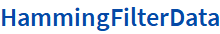

Q M R I TOOLS GUIDE
-
Functions
- CoilCombine
- CoilWeightedRecon
- CoilWeightedReconCSI
- DeconvolveCSIdata
- DenoiseCSIdata
- FourierKspace2D
- FourierKspaceCSI
- FourierRescaleData
- FourierShift
- FourierShifted
- HammingFilterCSI
- HammingFilterData
- InverseFourierShift
- InverseFourierShifted
- MakeHammingFilter
- MakeSense
- MeanAt
- MeanType
- NoiseCorrelation
- NoiseCovariance
- NormalizeSpectra
- OrderKspace
- ReadListData
- SagitalTranspose
- ShiftedFourier
- ShiftedInverseFourier
- TotalAt
- TotalType
ReconstructionTools
QMRITools package: Tools for very basic raw MRI data reconstruction.
ReferenceReference
CoilWeightedRecon — Performs reconstruction of MS 2D data.
CoilWeightedReconCSI — Performs reconstruction of 3D CSI data
ReadListData — Read Philips list data files of raw MRI data.
CoilCombine — Combine multi coils MRI data.

|
Transmogrify`Private`origdefaultWidth {Transmogrify`Private`origwrappedWidth, Transmogrify`Private`origwrappedHeight}
If[Ceiling[-------------------------------------] > 405, Transmogrify`Private`f = StringReplace[Files\ReconstructionTools\I_22.png, FileBaseName[Files\ReconstructionTools\I_22.png] :> FileBaseName[Files\ReconstructionTools\I_22.png]<>_405]; Transmogrify`Private`btiWrappedImageReturn = BoxToImage[Transmogrify`Private`f, ConversionOptions -> {ImageFormattingWidth -> 405}, Sequence @@ {Magnification -> Transmogrify`Private`mag, Inline -> True, CropImage -> False, ImageFormat -> PNG}]; {Transmogrify`Private`origwrappedWidth, Transmogrify`Private`origwrappedHeight} = ImageDimensions[Import[Transmogrify`Private`f]]; {Transmogrify`Private`wrappedWidth, Transmogrify`Private`wrappedHeight} = Ceiling[-------------------------------------------------------------------------------]; Return[XMLElement[img, {src -> , data-src -> (URL /. Transmogrify`Private`btiDefaultImageReturn), data-big -> ToString[Transmogrify`Private`defaultWidth]<> <>ToString[Transmogrify`Private`defaultHeight], data-small -> ToString[Transmogrify`Private`wrappedWidth]<> <>ToString[Transmogrify`Private`wrappedHeight], Sequence @@ {alt -> Click for copyable input}}, {}]], Return[(XMLElement[img, {src -> (URL /. #1), height -> ToString[Transmogrify`Private`defaultHeight], width -> ToString[Transmogrify`Private`defaultWidth], Sequence @@ {alt -> Click for copyable input}}, {}] & )[Transmogrify`Private`btiDefaultImageReturn]]]
2 2 |
Transmogrify`Private`origdefaultWidth {Transmogrify`Private`origwrappedWidth, Transmogrify`Private`origwrappedHeight}
If[Ceiling[-------------------------------------] > 405, Transmogrify`Private`f = StringReplace[Files\ReconstructionTools\I_24.png, FileBaseName[Files\ReconstructionTools\I_24.png] :> FileBaseName[Files\ReconstructionTools\I_24.png]<>_405]; Transmogrify`Private`btiWrappedImageReturn = BoxToImage[Transmogrify`Private`f, ConversionOptions -> {ImageFormattingWidth -> 405}, Sequence @@ {Magnification -> Transmogrify`Private`mag, Inline -> True, CropImage -> False, ImageFormat -> PNG}]; {Transmogrify`Private`origwrappedWidth, Transmogrify`Private`origwrappedHeight} = ImageDimensions[Import[Transmogrify`Private`f]]; {Transmogrify`Private`wrappedWidth, Transmogrify`Private`wrappedHeight} = Ceiling[-------------------------------------------------------------------------------]; Return[XMLElement[img, {src -> , data-src -> (URL /. Transmogrify`Private`btiDefaultImageReturn), data-big -> ToString[Transmogrify`Private`defaultWidth]<> <>ToString[Transmogrify`Private`defaultHeight], data-small -> ToString[Transmogrify`Private`wrappedWidth]<> <>ToString[Transmogrify`Private`wrappedHeight], Sequence @@ {alt -> Click for copyable input}}, {}]], Return[(XMLElement[img, {src -> (URL /. #1), height -> ToString[Transmogrify`Private`defaultHeight], width -> ToString[Transmogrify`Private`defaultWidth], Sequence @@ {alt -> Click for copyable input}}, {}] & )[Transmogrify`Private`btiDefaultImageReturn]]]
2 2 |
Transmogrify`Private`origdefaultWidth {Transmogrify`Private`origwrappedWidth, Transmogrify`Private`origwrappedHeight}
If[Ceiling[-------------------------------------] > 405, Transmogrify`Private`f = StringReplace[Files\ReconstructionTools\I_26.png, FileBaseName[Files\ReconstructionTools\I_26.png] :> FileBaseName[Files\ReconstructionTools\I_26.png]<>_405]; Transmogrify`Private`btiWrappedImageReturn = BoxToImage[Transmogrify`Private`f, ConversionOptions -> {ImageFormattingWidth -> 405}, Sequence @@ {Magnification -> Transmogrify`Private`mag, Inline -> True, CropImage -> False, ImageFormat -> PNG}]; {Transmogrify`Private`origwrappedWidth, Transmogrify`Private`origwrappedHeight} = ImageDimensions[Import[Transmogrify`Private`f]]; {Transmogrify`Private`wrappedWidth, Transmogrify`Private`wrappedHeight} = Ceiling[-------------------------------------------------------------------------------]; Return[XMLElement[img, {src -> , data-src -> (URL /. Transmogrify`Private`btiDefaultImageReturn), data-big -> ToString[Transmogrify`Private`defaultWidth]<> <>ToString[Transmogrify`Private`defaultHeight], data-small -> ToString[Transmogrify`Private`wrappedWidth]<> <>ToString[Transmogrify`Private`wrappedHeight], Sequence @@ {alt -> Click for copyable input}}, {}]], Return[(XMLElement[img, {src -> (URL /. #1), height -> ToString[Transmogrify`Private`defaultHeight], width -> ToString[Transmogrify`Private`defaultWidth], Sequence @@ {alt -> Click for copyable input}}, {}] & )[Transmogrify`Private`btiDefaultImageReturn]]]
2 2 |
Transmogrify`Private`origdefaultWidth {Transmogrify`Private`origwrappedWidth, Transmogrify`Private`origwrappedHeight}
If[Ceiling[-------------------------------------] > 405, Transmogrify`Private`f = StringReplace[Files\ReconstructionTools\I_28.png, FileBaseName[Files\ReconstructionTools\I_28.png] :> FileBaseName[Files\ReconstructionTools\I_28.png]<>_405]; Transmogrify`Private`btiWrappedImageReturn = BoxToImage[Transmogrify`Private`f, ConversionOptions -> {ImageFormattingWidth -> 405}, Sequence @@ {Magnification -> Transmogrify`Private`mag, Inline -> True, CropImage -> False, ImageFormat -> PNG}]; {Transmogrify`Private`origwrappedWidth, Transmogrify`Private`origwrappedHeight} = ImageDimensions[Import[Transmogrify`Private`f]]; {Transmogrify`Private`wrappedWidth, Transmogrify`Private`wrappedHeight} = Ceiling[-------------------------------------------------------------------------------]; Return[XMLElement[img, {src -> , data-src -> (URL /. Transmogrify`Private`btiDefaultImageReturn), data-big -> ToString[Transmogrify`Private`defaultWidth]<> <>ToString[Transmogrify`Private`defaultHeight], data-small -> ToString[Transmogrify`Private`wrappedWidth]<> <>ToString[Transmogrify`Private`wrappedHeight], Sequence @@ {alt -> Click for copyable input}}, {}]], Return[(XMLElement[img, {src -> (URL /. #1), height -> ToString[Transmogrify`Private`defaultHeight], width -> ToString[Transmogrify`Private`defaultWidth], Sequence @@ {alt -> Click for copyable input}}, {}] & )[Transmogrify`Private`btiDefaultImageReturn]]]
2 2 |
Transmogrify`Private`origdefaultWidth {Transmogrify`Private`origwrappedWidth, Transmogrify`Private`origwrappedHeight}
If[Ceiling[-------------------------------------] > 405, Transmogrify`Private`f = StringReplace[Files\ReconstructionTools\I_30.png, FileBaseName[Files\ReconstructionTools\I_30.png] :> FileBaseName[Files\ReconstructionTools\I_30.png]<>_405]; Transmogrify`Private`btiWrappedImageReturn = BoxToImage[Transmogrify`Private`f, ConversionOptions -> {ImageFormattingWidth -> 405}, Sequence @@ {Magnification -> Transmogrify`Private`mag, Inline -> True, CropImage -> False, ImageFormat -> PNG}]; {Transmogrify`Private`origwrappedWidth, Transmogrify`Private`origwrappedHeight} = ImageDimensions[Import[Transmogrify`Private`f]]; {Transmogrify`Private`wrappedWidth, Transmogrify`Private`wrappedHeight} = Ceiling[-------------------------------------------------------------------------------]; Return[XMLElement[img, {src -> , data-src -> (URL /. Transmogrify`Private`btiDefaultImageReturn), data-big -> ToString[Transmogrify`Private`defaultWidth]<> <>ToString[Transmogrify`Private`defaultHeight], data-small -> ToString[Transmogrify`Private`wrappedWidth]<> <>ToString[Transmogrify`Private`wrappedHeight], Sequence @@ {alt -> Click for copyable input}}, {}]], Return[(XMLElement[img, {src -> (URL /. #1), height -> ToString[Transmogrify`Private`defaultHeight], width -> ToString[Transmogrify`Private`defaultWidth], Sequence @@ {alt -> Click for copyable input}}, {}] & )[Transmogrify`Private`btiDefaultImageReturn]]]
2 2 |
Transmogrify`Private`origdefaultWidth {Transmogrify`Private`origwrappedWidth, Transmogrify`Private`origwrappedHeight}
If[Ceiling[-------------------------------------] > 405, Transmogrify`Private`f = StringReplace[Files\ReconstructionTools\I_32.png, FileBaseName[Files\ReconstructionTools\I_32.png] :> FileBaseName[Files\ReconstructionTools\I_32.png]<>_405]; Transmogrify`Private`btiWrappedImageReturn = BoxToImage[Transmogrify`Private`f, ConversionOptions -> {ImageFormattingWidth -> 405}, Sequence @@ {Magnification -> Transmogrify`Private`mag, Inline -> True, CropImage -> False, ImageFormat -> PNG}]; {Transmogrify`Private`origwrappedWidth, Transmogrify`Private`origwrappedHeight} = ImageDimensions[Import[Transmogrify`Private`f]]; {Transmogrify`Private`wrappedWidth, Transmogrify`Private`wrappedHeight} = Ceiling[-------------------------------------------------------------------------------]; Return[XMLElement[img, {src -> , data-src -> (URL /. Transmogrify`Private`btiDefaultImageReturn), data-big -> ToString[Transmogrify`Private`defaultWidth]<> <>ToString[Transmogrify`Private`defaultHeight], data-small -> ToString[Transmogrify`Private`wrappedWidth]<> <>ToString[Transmogrify`Private`wrappedHeight], Sequence @@ {alt -> Click for copyable input}}, {}]], Return[(XMLElement[img, {src -> (URL /. #1), height -> ToString[Transmogrify`Private`defaultHeight], width -> ToString[Transmogrify`Private`defaultWidth], Sequence @@ {alt -> Click for copyable input}}, {}] & )[Transmogrify`Private`btiDefaultImageReturn]]]
2 2 |
Transmogrify`Private`origdefaultWidth {Transmogrify`Private`origwrappedWidth, Transmogrify`Private`origwrappedHeight}
If[Ceiling[-------------------------------------] > 405, Transmogrify`Private`f = StringReplace[Files\ReconstructionTools\I_34.png, FileBaseName[Files\ReconstructionTools\I_34.png] :> FileBaseName[Files\ReconstructionTools\I_34.png]<>_405]; Transmogrify`Private`btiWrappedImageReturn = BoxToImage[Transmogrify`Private`f, ConversionOptions -> {ImageFormattingWidth -> 405}, Sequence @@ {Magnification -> Transmogrify`Private`mag, Inline -> True, CropImage -> False, ImageFormat -> PNG}]; {Transmogrify`Private`origwrappedWidth, Transmogrify`Private`origwrappedHeight} = ImageDimensions[Import[Transmogrify`Private`f]]; {Transmogrify`Private`wrappedWidth, Transmogrify`Private`wrappedHeight} = Ceiling[-------------------------------------------------------------------------------]; Return[XMLElement[img, {src -> , data-src -> (URL /. Transmogrify`Private`btiDefaultImageReturn), data-big -> ToString[Transmogrify`Private`defaultWidth]<> <>ToString[Transmogrify`Private`defaultHeight], data-small -> ToString[Transmogrify`Private`wrappedWidth]<> <>ToString[Transmogrify`Private`wrappedHeight], Sequence @@ {alt -> Click for copyable input}}, {}]], Return[(XMLElement[img, {src -> (URL /. #1), height -> ToString[Transmogrify`Private`defaultHeight], width -> ToString[Transmogrify`Private`defaultWidth], Sequence @@ {alt -> Click for copyable input}}, {}] & )[Transmogrify`Private`btiDefaultImageReturn]]]
2 2 |
Transmogrify`Private`origdefaultWidth {Transmogrify`Private`origwrappedWidth, Transmogrify`Private`origwrappedHeight}
If[Ceiling[-------------------------------------] > 405, Transmogrify`Private`f = StringReplace[Files\ReconstructionTools\I_36.png, FileBaseName[Files\ReconstructionTools\I_36.png] :> FileBaseName[Files\ReconstructionTools\I_36.png]<>_405]; Transmogrify`Private`btiWrappedImageReturn = BoxToImage[Transmogrify`Private`f, ConversionOptions -> {ImageFormattingWidth -> 405}, Sequence @@ {Magnification -> Transmogrify`Private`mag, Inline -> True, CropImage -> False, ImageFormat -> PNG}]; {Transmogrify`Private`origwrappedWidth, Transmogrify`Private`origwrappedHeight} = ImageDimensions[Import[Transmogrify`Private`f]]; {Transmogrify`Private`wrappedWidth, Transmogrify`Private`wrappedHeight} = Ceiling[-------------------------------------------------------------------------------]; Return[XMLElement[img, {src -> , data-src -> (URL /. Transmogrify`Private`btiDefaultImageReturn), data-big -> ToString[Transmogrify`Private`defaultWidth]<> <>ToString[Transmogrify`Private`defaultHeight], data-small -> ToString[Transmogrify`Private`wrappedWidth]<> <>ToString[Transmogrify`Private`wrappedHeight], Sequence @@ {alt -> Click for copyable input}}, {}]], Return[(XMLElement[img, {src -> (URL /. #1), height -> ToString[Transmogrify`Private`defaultHeight], width -> ToString[Transmogrify`Private`defaultWidth], Sequence @@ {alt -> Click for copyable input}}, {}] & )[Transmogrify`Private`btiDefaultImageReturn]]]
2 2 |
Transmogrify`Private`origdefaultWidth {Transmogrify`Private`origwrappedWidth, Transmogrify`Private`origwrappedHeight}
If[Ceiling[-------------------------------------] > 405, Transmogrify`Private`f = StringReplace[Files\ReconstructionTools\I_38.png, FileBaseName[Files\ReconstructionTools\I_38.png] :> FileBaseName[Files\ReconstructionTools\I_38.png]<>_405]; Transmogrify`Private`btiWrappedImageReturn = BoxToImage[Transmogrify`Private`f, ConversionOptions -> {ImageFormattingWidth -> 405}, Sequence @@ {Magnification -> Transmogrify`Private`mag, Inline -> True, CropImage -> False, ImageFormat -> PNG}]; {Transmogrify`Private`origwrappedWidth, Transmogrify`Private`origwrappedHeight} = ImageDimensions[Import[Transmogrify`Private`f]]; {Transmogrify`Private`wrappedWidth, Transmogrify`Private`wrappedHeight} = Ceiling[-------------------------------------------------------------------------------]; Return[XMLElement[img, {src -> , data-src -> (URL /. Transmogrify`Private`btiDefaultImageReturn), data-big -> ToString[Transmogrify`Private`defaultWidth]<> <>ToString[Transmogrify`Private`defaultHeight], data-small -> ToString[Transmogrify`Private`wrappedWidth]<> <>ToString[Transmogrify`Private`wrappedHeight], Sequence @@ {alt -> Click for copyable input}}, {}]], Return[(XMLElement[img, {src -> (URL /. #1), height -> ToString[Transmogrify`Private`defaultHeight], width -> ToString[Transmogrify`Private`defaultWidth], Sequence @@ {alt -> Click for copyable input}}, {}] & )[Transmogrify`Private`btiDefaultImageReturn]]]
2 2 |
Transmogrify`Private`origdefaultWidth {Transmogrify`Private`origwrappedWidth, Transmogrify`Private`origwrappedHeight}
If[Ceiling[-------------------------------------] > 405, Transmogrify`Private`f = StringReplace[Files\ReconstructionTools\I_40.png, FileBaseName[Files\ReconstructionTools\I_40.png] :> FileBaseName[Files\ReconstructionTools\I_40.png]<>_405]; Transmogrify`Private`btiWrappedImageReturn = BoxToImage[Transmogrify`Private`f, ConversionOptions -> {ImageFormattingWidth -> 405}, Sequence @@ {Magnification -> Transmogrify`Private`mag, Inline -> True, CropImage -> False, ImageFormat -> PNG}]; {Transmogrify`Private`origwrappedWidth, Transmogrify`Private`origwrappedHeight} = ImageDimensions[Import[Transmogrify`Private`f]]; {Transmogrify`Private`wrappedWidth, Transmogrify`Private`wrappedHeight} = Ceiling[-------------------------------------------------------------------------------]; Return[XMLElement[img, {src -> , data-src -> (URL /. Transmogrify`Private`btiDefaultImageReturn), data-big -> ToString[Transmogrify`Private`defaultWidth]<> <>ToString[Transmogrify`Private`defaultHeight], data-small -> ToString[Transmogrify`Private`wrappedWidth]<> <>ToString[Transmogrify`Private`wrappedHeight], Sequence @@ {alt -> Click for copyable input}}, {}]], Return[(XMLElement[img, {src -> (URL /. #1), height -> ToString[Transmogrify`Private`defaultHeight], width -> ToString[Transmogrify`Private`defaultWidth], Sequence @@ {alt -> Click for copyable input}}, {}] & )[Transmogrify`Private`btiDefaultImageReturn]]]
2 2 |
Transmogrify`Private`origdefaultWidth {Transmogrify`Private`origwrappedWidth, Transmogrify`Private`origwrappedHeight}
If[Ceiling[-------------------------------------] > 405, Transmogrify`Private`f = StringReplace[Files\ReconstructionTools\I_42.png, FileBaseName[Files\ReconstructionTools\I_42.png] :> FileBaseName[Files\ReconstructionTools\I_42.png]<>_405]; Transmogrify`Private`btiWrappedImageReturn = BoxToImage[Transmogrify`Private`f, ConversionOptions -> {ImageFormattingWidth -> 405}, Sequence @@ {Magnification -> Transmogrify`Private`mag, Inline -> True, CropImage -> False, ImageFormat -> PNG}]; {Transmogrify`Private`origwrappedWidth, Transmogrify`Private`origwrappedHeight} = ImageDimensions[Import[Transmogrify`Private`f]]; {Transmogrify`Private`wrappedWidth, Transmogrify`Private`wrappedHeight} = Ceiling[-------------------------------------------------------------------------------]; Return[XMLElement[img, {src -> , data-src -> (URL /. Transmogrify`Private`btiDefaultImageReturn), data-big -> ToString[Transmogrify`Private`defaultWidth]<> <>ToString[Transmogrify`Private`defaultHeight], data-small -> ToString[Transmogrify`Private`wrappedWidth]<> <>ToString[Transmogrify`Private`wrappedHeight], Sequence @@ {alt -> Click for copyable input}}, {}]], Return[(XMLElement[img, {src -> (URL /. #1), height -> ToString[Transmogrify`Private`defaultHeight], width -> ToString[Transmogrify`Private`defaultWidth], Sequence @@ {alt -> Click for copyable input}}, {}] & )[Transmogrify`Private`btiDefaultImageReturn]]]
2 2 |
Transmogrify`Private`origdefaultWidth {Transmogrify`Private`origwrappedWidth, Transmogrify`Private`origwrappedHeight}
If[Ceiling[-------------------------------------] > 405, Transmogrify`Private`f = StringReplace[Files\ReconstructionTools\I_44.png, FileBaseName[Files\ReconstructionTools\I_44.png] :> FileBaseName[Files\ReconstructionTools\I_44.png]<>_405]; Transmogrify`Private`btiWrappedImageReturn = BoxToImage[Transmogrify`Private`f, ConversionOptions -> {ImageFormattingWidth -> 405}, Sequence @@ {Magnification -> Transmogrify`Private`mag, Inline -> True, CropImage -> False, ImageFormat -> PNG}]; {Transmogrify`Private`origwrappedWidth, Transmogrify`Private`origwrappedHeight} = ImageDimensions[Import[Transmogrify`Private`f]]; {Transmogrify`Private`wrappedWidth, Transmogrify`Private`wrappedHeight} = Ceiling[-------------------------------------------------------------------------------]; Return[XMLElement[img, {src -> , data-src -> (URL /. Transmogrify`Private`btiDefaultImageReturn), data-big -> ToString[Transmogrify`Private`defaultWidth]<> <>ToString[Transmogrify`Private`defaultHeight], data-small -> ToString[Transmogrify`Private`wrappedWidth]<> <>ToString[Transmogrify`Private`wrappedHeight], Sequence @@ {alt -> Click for copyable input}}, {}]], Return[(XMLElement[img, {src -> (URL /. #1), height -> ToString[Transmogrify`Private`defaultHeight], width -> ToString[Transmogrify`Private`defaultWidth], Sequence @@ {alt -> Click for copyable input}}, {}] & )[Transmogrify`Private`btiDefaultImageReturn]]]
2 2 |